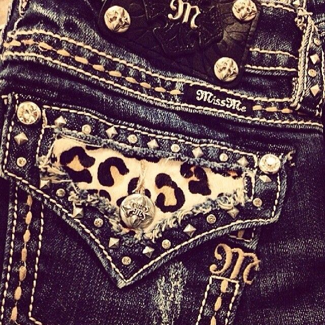
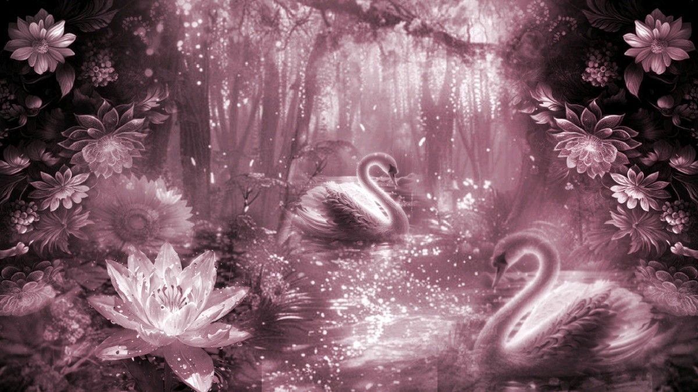
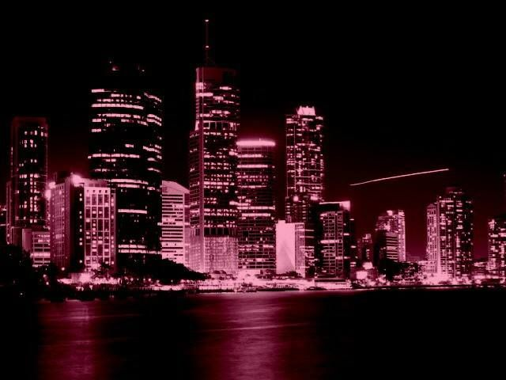
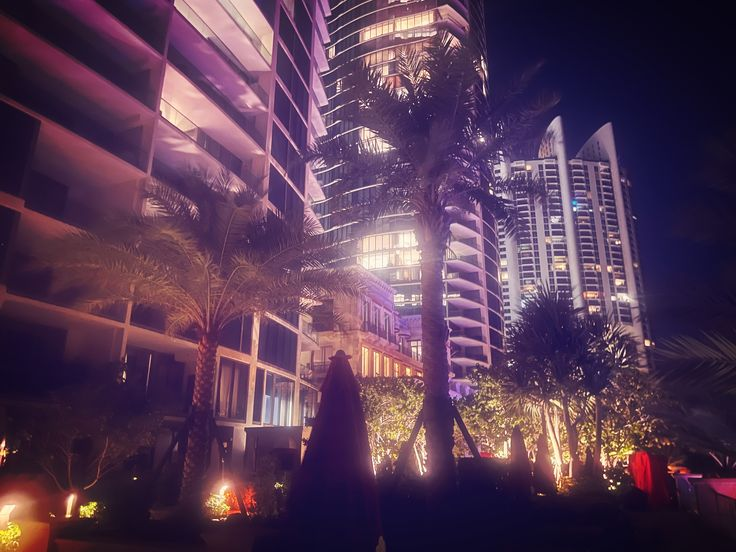
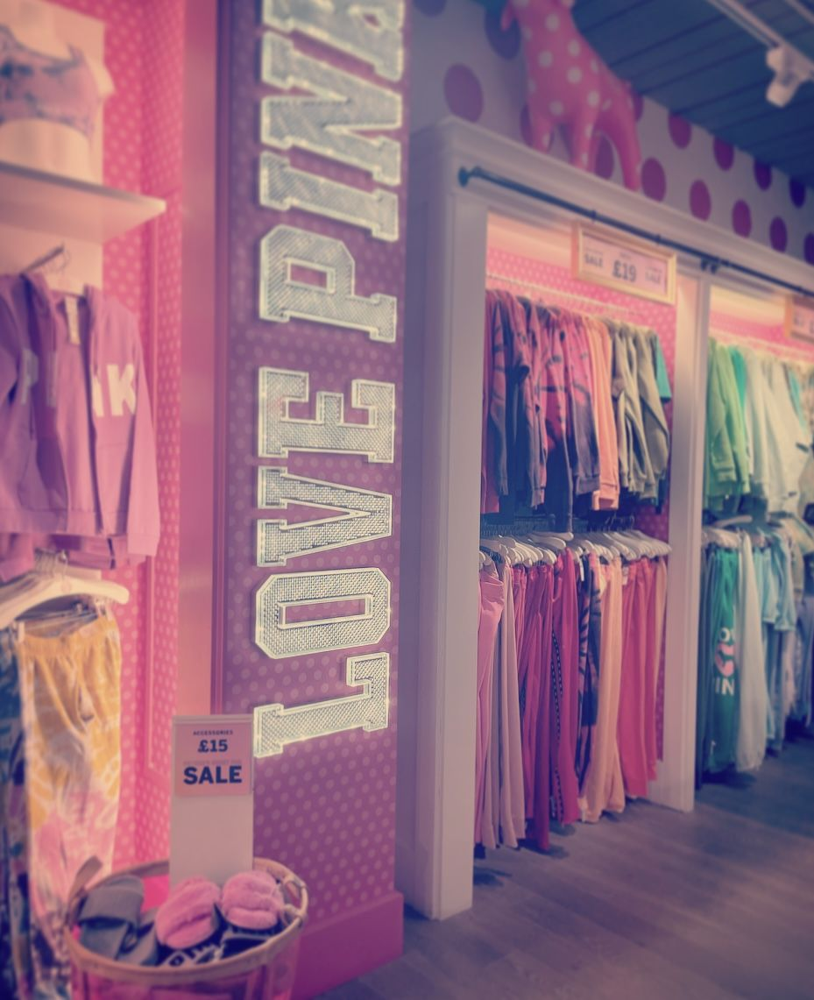
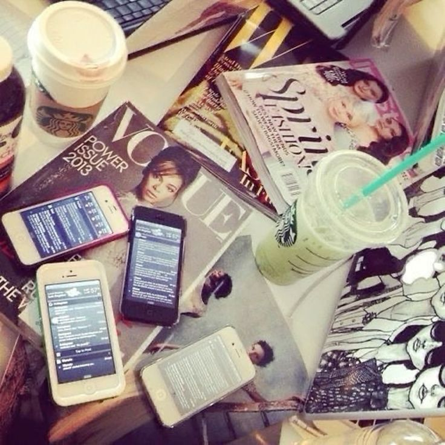
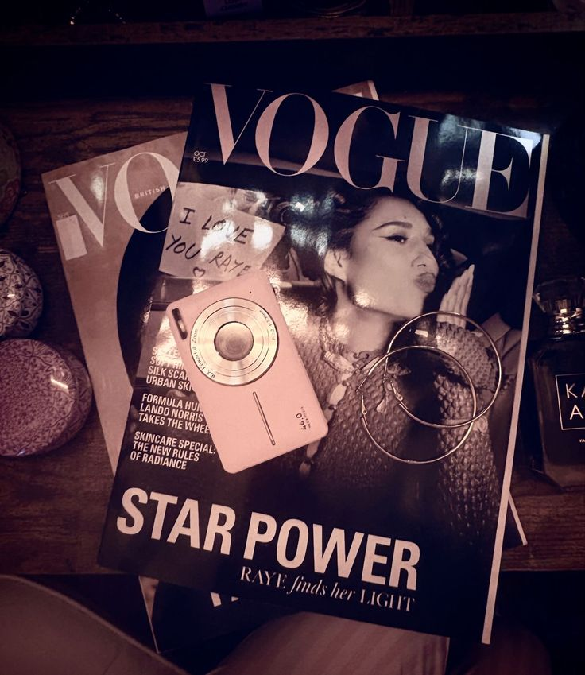

Karya Nyata dari Proses Belajar







Website ini dibuat agar lebih mudah mengakses semua karya-karya saya dan juga sebagai sarana belajar saya tentang HTML
Website ini adalah gabungan antara proyek Uprak Video Broadcasting, Teks Argumentasi Bahasa Indonesia secara lisan, serta karya-karya Scratch saya.
Tujuan pembuatan website ini adalah untuk menampilkan karya yang telah saya buat dan juga memahami cara menyusun, menampilkan informasi secara digital, serta mengembangkan kreativitas dan keterampilan teknologi.
Topik argumentasi yang saya pilih untuk video adalah tentang IC (Internship Curriculum). Saya memilih topik itu karena termasuk ke dalam dunia pendidikan dan melalui topik ini saya bisa menjelaskan sudut pandang saya mengenai manfaat dan tantangan dalam kegiatan IC ini bagi siswa.
Harapan saya penonton dapat memahami IC lebih jauh, berpikir lebih kritis dan memahami manfaat serta tantangan mengenai program tersebut.
Dengan ujian praktik ini, saya belajar untuk lebih percaya diri, mengembangkan kemampuan berbicara, dan keterampilan HTML. Kesan saya selama belajar di SMPIT Al Haraki sangat menyenangkan karena saya mendapatkan banyak pengalaman, ilmu, dan teman-teman yang baik. Pesan saya, semoga sekolah ini terus menjadi sekolah yang dapat membantu siswa berkembang dan meraih cita-cita mereka.